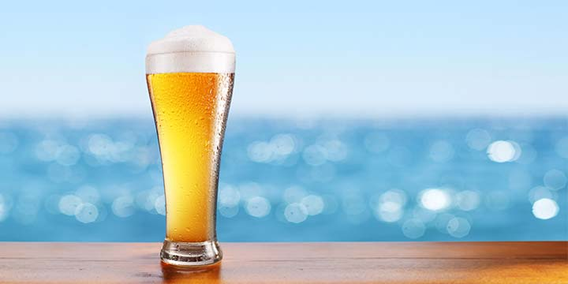

Blonde Ale Recipe

Every ingredient in a beer should serve a purpose, and sometimes it only takes a a little of this and a bit of that to create a well-balanced, focused beer. Take this easy-drinking blonde ale recipe, for example. Simplicity is the name of the game, using just two types of malt, one type of hop, and yeast. Brewers have options to increase the strength through a sugar addition and to experiment with yeast character. A great recipe for newbies and pros alike!
Ingredients
- Malt
- 9 lb. (4.1 kg) German Pils malt
- 1 lb. (454 g) caramel Pils / Cara 8 malt
- hops
- 0.5 oz. (14 g) Magnum hops, 12% a.a. @ 60 min
- 0.5 oz. (14 g) Willamette hops, 5.5% a.a. @ whirlpool for 20 min
- Yeast
- American variant: Wyeast 1272 American Ale II or Wyeast 1450 Denny’s Favorite 50 Ale
- Belgian variant: Wyeast 1214 Belgian Abbey Style Ale or White Labs WLP550 Belgian Ale
Steps
- Mash at 154°F (68°C) for 60 minutes.
- Mash out at 168°F (76°C), with pre-boil wort volume of 7 gal. (26.5 L).
- Bring to a rolling boil for 60 minutes, adding hops at specified intervals from end of boil.
- Chill wort to 62°F (17°C) and pitch yeast.
- Ferment in primary at 62°F (17°C) until fermentation slows significantly (7–9 days).